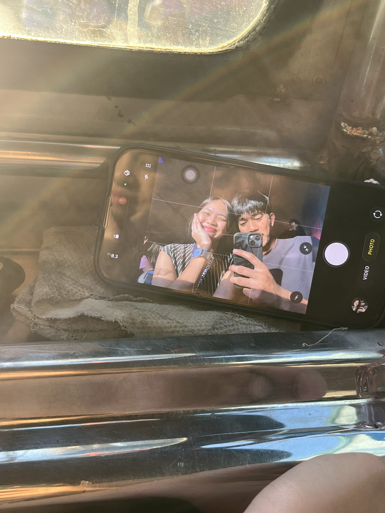
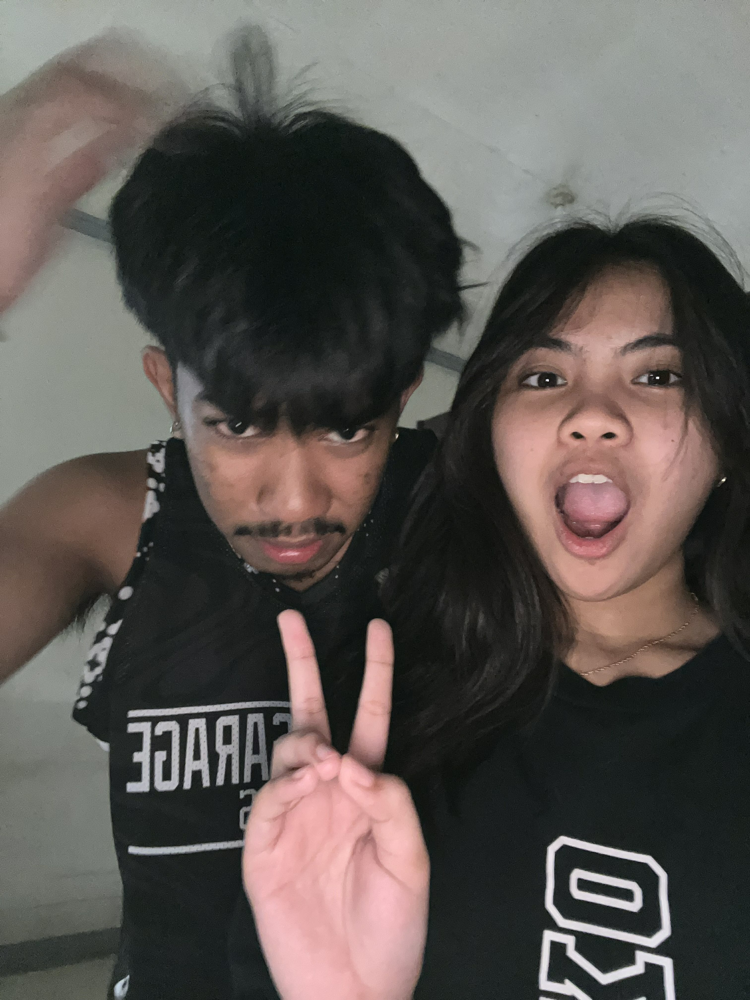

.jpg)
Hi Baby,
Unang una sa lahat i want to thank you for always being there for me and for making my heart happy. Kung alam mo lang kung gaano mo ako napapasaya, ikaw ang nagbibigay sa akin ng lakas magmove forward kahit super down na down na aq sa mga problems na dumadating. Siguro hindi ikaw aware dun pero isa ka sa mga dahilan kung bakit gusto ko magpatuloy. Gusto ko din humingi ng sorry sa lahat ng maling ginagawa ko at pagpapaiyak ko sayo, i promise u na magiging better aq at magpapakabait na aq hehe.I am so proud of you my baby, nakikita ko lahat ng hardworks and efforts na ginagawa mo at bilib na bilib aq sayo. Isa ako sa mga papalakpal once nakamit mo na ang mga goals mo sa buhay, be strong, be kind, and always keep your feet on the ground. Lastly, I love you so much mae! Mahal na mahal kita at hinding hindi ako mawawala sa tabi mo. mwa
"Icarus was a fool to fly to the Sun, because even with its light, it couldn't compare with the beauty and might that reside in your eyes."
Your Suitor,
Ernest

Will you be my Valentine? 💘